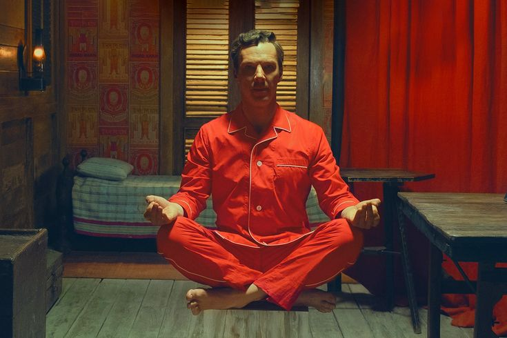

Exclusiva con Wes Anderson: “Hay que divertirse también con las historias”
POR PABLO O. SCHOLZ
Hay pocos cineastas a los que se les puede reconocer una película viendo un solo fotograma. Uno es Wes Anderson, el director de El Gran Hotel Budapest y Los excéntricos Tenenbaums, quien extrañamente este año tuvo dos premières mundiales en festivales, una en Cannes y otra en Venecia. En el primero, el largo Asteroid City, y en la Mostra hace apenas unas semanas La maravillosa historia de Henry Sugar, un cortometraje basado en un relato de Roald Dahl, el autor de Matilda y Charlie y la fábrica de chocolate.
El corto -deberíamos llamarlo mediometraje- dura 41 minutos, y en él un hombre rico se entera de que hay un gurú que puede ver las cosas sin utilizar sus ojos, y se propone dominar esa habilidad para hacer trampa en el juego. Desde el miércoles está disponible en Netflix.
Anderson es, en sí mismo, todo un personaje. Suele vestir de tonos claros, luminosos como sus películas. En el Hotel Excelsior, en Venecia, recibe al enviado de Clarín con un traje blanco, camisa blanca abotonada hasta el cuello, zapatos marrones y medias al tono.
seguir leyendo